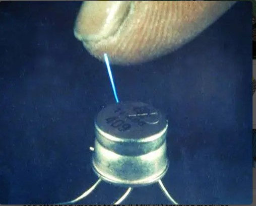

Introduction & What Is ESD
Electrostatic discharge (ESD) is the sudden transfer of electrostatic charge between two objects at different electrical potentials. The event may last only a few nanoseconds, yet peak currents can exceed 30–60 A — enough to cause permanent damage, temporary malfunction, or a latent reliability failure that doesn't show up until months later in the field.
ESD is invisible until it isn't. A person walking across carpet in dry air can build up a body voltage of several kilovolts without feeling a thing, right up until a fingertip gets close enough to a grounded conductor for the air itself to break down and a visible (or audible) spark jumps the gap.

Inside a product, that same spark becomes a nanosecond-scale current pulse injected directly into a connector, a case seam, or an exposed trace — fast enough that a poorly protected IC pin sees the full transient before any downstream circuitry has a chance to react.
Click through each stage below to see exactly how a routine walk across a room becomes an electrical event a product has to survive.
Module 1 Quiz
Select the best answer for each question. Instant feedback is provided after each response.